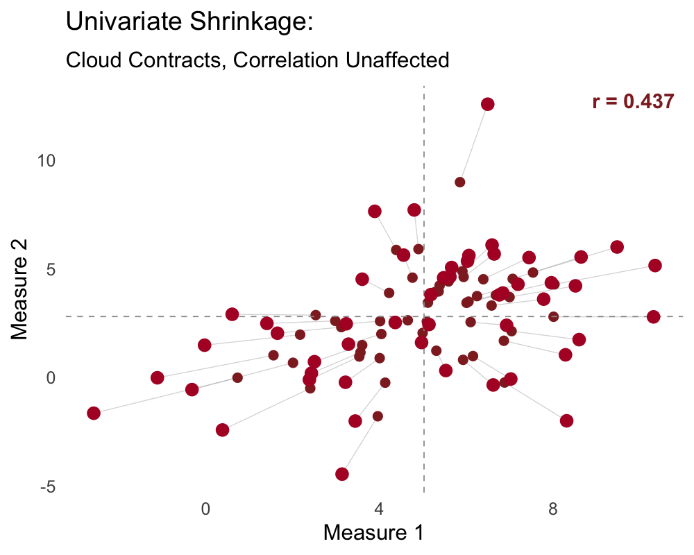
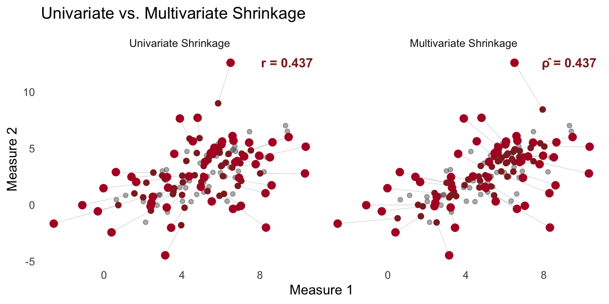
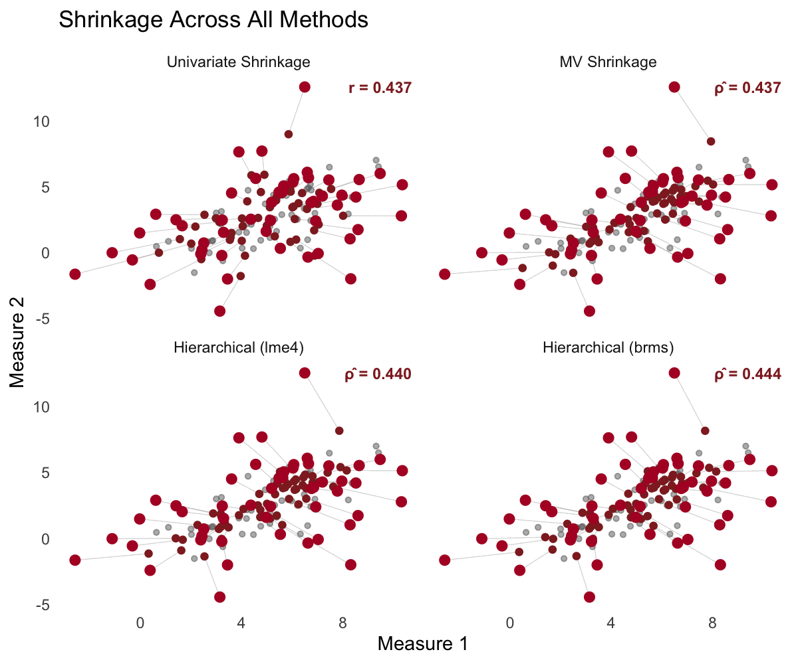

How to Estimate a Correlation, and What It Means for Science
Introduction
In Part 1 of this series, we showed that six different methods for estimating individual means—James-Stein, classical true score estimation, empirical Bayes, ridge regression, and hierarchical models (frequentist and Bayesian)—all converge on the same fundamental principle: shrink each individual’s estimate toward the group mean by a factor of \(\sigma^2_{\text{pop}} / (\sigma^2_{\text{pop}} + \sigma^2_{\text{obs}}/n)\).
But if you read Part 1’s implications section carefully, you may have noticed that I buried the lede… many real-world consequences we discussed—attenuated correlations, the reliability paradox, brain-behavior links—were actually correlation problems, not mean-estimation problems per se.
Estimating correlations when measures have error is a more challenging problem than simply estimating better means (as we did in part 1). Unlike the univariate case, measurement error does not just add noise to correlations—it systematically biases them toward zero. Whereas the sample mean was unbiased for an individual’s true mean, the sample correlation is biased for the true correlation between latent variables.
In this post, we expand our initial scope from univariate to multivariate shrinkage estimators, which allow us to tackle the correlation problem. Time to dive in!
The Problem: Attenuation
Setup
Consider \(N\) individuals, each measured on two variables with \(n\) trials per variable. The data-generating process is:
\[\begin{aligned} (\theta_{1,i}, \theta_{2,i}) &\sim \text{MVN}\left(\boldsymbol{\mu}, \boldsymbol{\Sigma}_{\text{pop}}\right) \\ y_{k,i,t} &\sim \mathcal{N}(\theta_{k,i}, \sigma_{\text{obs},k}), \quad k \in \{1, 2\} \end{aligned}\]
where \(\boldsymbol{\mu} = (\mu_1, \mu_2)^\top\) is the population mean vector and \(\boldsymbol{\Sigma}_{\text{pop}}\) is the \(2 \times 2\) population covariance matrix:
\[\boldsymbol{\Sigma}_{\text{pop}} = \begin{pmatrix} \sigma^2_{\text{pop},1} & \rho_{\text{true}}\sigma_{\text{pop},1}\sigma_{\text{pop},2} \\ \rho_{\text{true}}\sigma_{\text{pop},1}\sigma_{\text{pop},2} & \sigma^2_{\text{pop},2} \end{pmatrix}\]
The diagonal entries capture between-person variability on each measure; the off-diagonal entry captures how much the two measures covary across individuals, which is directly determined by \(\rho_{\text{true}}\). Each individual has a true score on each measure, these true scores have a correlation, and we observe noisy realizations of those correlated true scores.
The Attenuation Formula
The naive approach is to compute the sample mean for each individual on each measure, then correlate post-hoc: \(r(\bar{y}_1, \bar{y}_2)\). However, this observed correlation is systematically deflated!
Recall that the Pearson correlation has a numerator (the covariance) and a denominator (the product of the standard deviations):
\[r(\bar{y}_1, \bar{y}_2) = \frac{\text{Cov}(\bar{y}_1, \bar{y}_2)}{\sqrt{\text{Var}(\bar{y}_1) \cdot \text{Var}(\bar{y}_2)}}\]
We can look at each to see how measurement error produces attenuation.
The numerator (covariance). Since \(\bar{y}_k = \theta_k + \bar{\epsilon}_k\), the covariance expands into four terms:
\[\begin{aligned} \text{Cov}(\bar{y}_1, \bar{y}_2) &= \text{Cov}(\theta_1 + \bar{\epsilon}_1,\; \theta_2 + \bar{\epsilon}_2) \\ &= \text{Cov}(\theta_1, \theta_2) + \underbrace{\text{Cov}(\theta_1, \bar{\epsilon}_2)}_{=0} + \underbrace{\text{Cov}(\bar{\epsilon}_1, \theta_2)}_{=0} + \underbrace{\text{Cov}(\bar{\epsilon}_1, \bar{\epsilon}_2)}_{=0} \\ &= \rho_{\text{true}}\sigma_{\text{pop},1}\sigma_{\text{pop},2} \end{aligned}\]
Because the measurement errors are independent of each other and of the true scores, all three cross-terms drop out. Concisely, \(\mathbb{E}\!\left[\text{Cov}(\bar{y}_1, \bar{y}_2)\right] = \text{Cov}(\theta_1, \theta_2) = \rho_{\text{true}}\sigma_{\text{pop},1}\sigma_{\text{pop},2}\), which means that although the sample covariance may be a high variance estimator of the true covariance when dealing with lower sample sizes, it is unbiased. This means that measurement error must creap in through the denominator…
The denominator (variances). The variance of each individual’s sample mean has two components—true between-person variance plus the measurement error that remains after averaging over \(n\) trials:
\[\text{Var}(\bar{y}_k) = \text{Var}(\theta_k) + \text{Var}(\bar{\epsilon}_k) = \sigma^2_{\text{pop},k} + \sigma^2_{\text{obs},k}/n\]
Notice that the \(\sigma^2_{\text{obs},k}/n\) term appears only in the denominator, and it has the effect of inflating it. This asymmetry is what causes attenuation—the numerator is an unbiased estimator of the true covariance, but the denominator is actually an estimator of sample variance, which includes both true between-person variance plus person-level measurement error. You see it play out when substituting both pieces into the correlation formula:
\[r(\bar{y}_1, \bar{y}_2) = \frac{\rho_{\text{true}}\sigma_{\text{pop},1}\sigma_{\text{pop},2}}{\sqrt{(\sigma^2_{\text{pop},1} + \sigma^2_{\text{obs},1}/n)(\sigma^2_{\text{pop},2} + \sigma^2_{\text{obs},2}/n)}}\]
And then we can square both sides:
\[r(\bar{y}_1, \bar{y}_2)^2 = \frac{\rho^2_{\text{true}} \cdot \sigma^2_{\text{pop},1} \cdot \sigma^2_{\text{pop},2}}{(\sigma^2_{\text{pop},1} + \sigma^2_{\text{obs},1}/n)(\sigma^2_{\text{pop},2} + \sigma^2_{\text{obs},2}/n)}\]
Which makes it easier to bring the form closer to something we are familiar with:
\[r(\bar{y}_1, \bar{y}_2)^2 = \rho^2_{\text{true}} \cdot \frac{\sigma^2_{\text{pop},1}}{\sigma^2_{\text{pop},1} + \sigma^2_{\text{obs},1}/n} \cdot \frac{\sigma^2_{\text{pop},2}}{\sigma^2_{\text{pop},2} + \sigma^2_{\text{obs},2}/n}\]
Interesting! Look at the second and third terms. Each one is the variance of the true scores divided by the total variance of the sample means for that measure. This is exactly the reliability term from Part 1—signal over signal-plus-noise:
\[\rho_{xx,k} = \frac{\sigma^2_{\text{pop},k}}{\sigma^2_{\text{pop},k} + \sigma^2_{\text{obs},k}/n}\]
Substitute in the traditional reliability coefficient for the reliability terms:
\[r(\bar{y}_1, \bar{y}_2)^2 = \rho^2_{\text{true}} \cdot \rho_{xx,1} \cdot \rho_{xx,2}\]
Take the square root:
\[r(\bar{y}_1, \bar{y}_2) = \rho_{\text{true}} \sqrt{\rho_{xx,1} \cdot \rho_{xx,2}}\]
And we arrive at Spearman’s (1904) attenuation formula. The observed correlation equals the true correlation shrunken down by the measure reliabilities. Since reliabilities are between 0 and 1, the observed correlation is always closer to zero than it is to the true correlation that we care about. The worse the measurement error, the more the correlation is shrunken toward zero.
I will emphasize again a key difference from Part 1—the sample mean is unbiased for the individual’s true mean \(\theta_i\), but the sample correlation is biased for the true correlation between means \(\rho_{\text{true}} = r(\theta_1, \theta_2)\).
Simulation Setup
Alright, time for some simulations. We will mirror Part 1’s setup, but now with two correlated measures:
library(MASS)
library(dplyr)
library(tidyr)
library(foreach)
library(ggplot2)
set.seed(43202)
# Simulation parameters
N_subj <- 50
n_obs <- 10
mu1 <- 5
mu2 <- 3
sigma_pop1 <- 2
sigma_pop2 <- 2
rho_true <- 0.7
sigma_obs1 <- 6
sigma_obs2 <- 6
# Population covariance matrix
Sigma_pop <- matrix(c(sigma_pop1^2, rho_true * sigma_pop1 * sigma_pop2,
rho_true * sigma_pop1 * sigma_pop2, sigma_pop2^2), 2, 2)
# Generate true individual parameters from population distribution
theta_true <- MASS::mvrnorm(N_subj, mu = c(mu1, mu2), Sigma = Sigma_pop)
# Generate observations for each individual on each measure
obs_data <- foreach(i = 1:N_subj, .combine = "rbind") %do% {
y1 <- rnorm(n_obs, theta_true[i, 1], sigma_obs1)
y2 <- rnorm(n_obs, theta_true[i, 2], sigma_obs2)
data.frame(
subj = i,
trial = 1:n_obs,
theta1 = theta_true[i, 1],
theta2 = theta_true[i, 2],
y1 = y1,
y2 = y2
)
}
# Compute reliabilities
rel1 <- sigma_pop1^2 / (sigma_pop1^2 + sigma_obs1^2 / n_obs)
rel2 <- sigma_pop2^2 / (sigma_pop2^2 + sigma_obs2^2 / n_obs)
r_expected <- rho_true * sqrt(rel1 * rel2)The reliability of each measure is \(\hat{\rho}_{xx}\) = 0.53, meaning that only about 53% of the variance in the sample means reflects true between-person differences. The expected attenuated correlation is \(r_{\text{obs}} \approx\) 0.37—almost half of the true \(\rho\) = 0.7.
Let’s look at the observations for 5 randomly selected individuals across both measures:
Click to show visualization code
display_subjs <- sort(sample(1:N_subj, 5))
p_histograms <- obs_data %>%
filter(subj %in% display_subjs) %>%
pivot_longer(cols = c(y1, y2, theta1, theta2), names_to = "measure_type", values_to = "value") %>%
mutate(
measure = ifelse(measure_type %in% c("y1", "theta1"), "y1", "y2"),
y = ifelse(measure_type %in% c("y1", "y2"), value, NA),
theta = ifelse(measure_type %in% c("theta1", "theta2"), value, NA),
subj_label = paste0("Subject ", subj),
measure_label = ifelse(measure == "y1", "Measure 1", "Measure 2")
) %>%
ggplot(aes(x = y)) +
geom_histogram(fill = "#DCBCBC", color = "white", bins = 12) +
geom_vline(aes(xintercept=theta)) +
facet_grid(measure_label ~ subj_label, scales = "free_y") +
xlab("Observed Value (y)") +
ylab("Count") +
ggtitle("Observations for 5 Individuals Across 2 Measures") +
theme_minimal(base_size = 15) +
theme(panel.grid = element_blank())
As in Part 1, with only 10 observations per individual per measure and a large observation(person)-level standard deviation (\(\sigma_{\text{obs}}\) = 6), the observations are quite spread out around the true means (gray bars). The challenge now is not just estimating individual means, but estimating the relationship between two noisy sets of means.
The Two-Stage Pearson r (Naive Approach)
The approach people often take is to compute the sample mean for each individual on each measure, then compute the Pearson’s correlation between sample means:
# Compute individual-level sample means
subj_summary <- obs_data %>%
group_by(subj) %>%
summarize(
theta1 = unique(theta1),
theta2 = unique(theta2),
ybar1 = mean(y1),
ybar2 = mean(y2),
.groups = "drop"
)
# Naive correlation
r_naive <- cor(subj_summary$ybar1, subj_summary$ybar2)
# True correlation (from the actual theta values)
r_true_sample <- cor(subj_summary$theta1, subj_summary$theta2)Click to show visualization code
subj_long <- bind_rows(
subj_summary %>% transmute(x = theta1, y = theta2,
Type = paste0("True (\u03B8\u2081, \u03B8\u2082)")),
subj_summary %>% transmute(x = ybar1, y = ybar2,
Type = paste0("Observed (\u0233\u2081, \u0233\u2082)"))
)
p_twostage <- ggplot(subj_long, aes(x = x, y = y, color = Type)) +
geom_point(size = 3, alpha = 0.7) +
scale_color_manual(values = c(setNames("gray40", paste0("True (\u03B8\u2081, \u03B8\u2082)")),
setNames("#DCBCBC", paste0("Observed (\u0233\u2081, \u0233\u2082)")))) +
xlab("Measure 1") +
ylab("Measure 2") +
ggtitle(paste0("Two-Stage Pearson r = ", round(r_naive, 2),
" (True \u03C1 = ", rho_true, ")")) +
theme_minimal(base_size = 15) +
theme(panel.grid = element_blank(),
legend.title = element_blank(),
legend.position = c(.2, .85))
The gray points show individuals’ true scores, and the light red points show the sample means. Measurement error has expanded the scatterplot cloud, weakening the apparent relationship. The two-stage Pearson \(r\) = 0.44, much less than the true \(\rho\) = 0.7.
To confirm this is not sampling variability and an (un)lucky simulation seed, we can repeat the simulation many times:
Click to show visualization code
n_sims <- 1000
r_naive_dist <- replicate(n_sims, {
theta_sim <- MASS::mvrnorm(N_subj, mu = c(mu1, mu2), Sigma = Sigma_pop)
y1_sim <- matrix(rnorm(N_subj * n_obs, theta_sim[, 1], sigma_obs1), N_subj, n_obs)
y2_sim <- matrix(rnorm(N_subj * n_obs, theta_sim[, 2], sigma_obs2), N_subj, n_obs)
cor(rowMeans(y1_sim), rowMeans(y2_sim))
})
p_naive_dist <- data.frame(r = r_naive_dist) %>%
ggplot(aes(x = r)) +
geom_histogram(fill = "#DCBCBC", color = "white", bins = 50) +
geom_vline(xintercept = rho_true, color = "gray40", size = 1.2, linetype = 1) +
geom_vline(xintercept = mean(r_naive_dist), color = "#8F2727", size = 1.2, linetype = 2) +
annotate("text", x = rho_true - 0.17, y = Inf,
label = paste0("True \u03C1 = ", rho_true), hjust = 0, vjust = 1.5,
color = "gray40", size = 4.5) +
annotate("text", x = mean(r_naive_dist) - 0.02, y = Inf,
label = paste0("Mean r = ", round(mean(r_naive_dist), 2)),
hjust = 1, vjust = 1.5, color = "#8F2727", size = 4.5) +
xlab("Observed Pearson r") +
ylab("Count") +
ggtitle("Sampling Distribution of the Two-Stage Pearson r") +
theme_minimal(base_size = 15) +
theme(panel.grid = element_blank())
The sampling distribution is centered around 0.36, consistent with the attenuation formula’s prediction. The two-stage Pearson \(r\) is a biased estimator of \(\rho_{\text{true}}\)—it systematically underestimates the true correlation.
I don’t know about you, but this all seems problematic! Many social and behavioral science papers follow the exact workflow above, and then they go on to interpret resulting correlations. Occasionally, researchers will even report things like Cronbach’s \(\alpha\) (a reliability estimator, see our previous post) for their self-report summed score measures—but in the majority of cases they don’t bother using this reliability estimate to disattenuate downstream correlations. Instead, as often happens in science, researchers are following standards divorced from the rationales that motivated the standards a priori (e.g., “Cronbach’s \(\alpha\) = .7, which is considered good (Citation et al, 1990)” — yes, but only good if you like attenuated estimates :D)
A Tempting But Wrong Fix: Univariate Shrinkage
Part 1 taught us that shrinking individual means toward the group-level mean produces better estimates. A natural question that comes to mind is: what if we apply the univariate shrinkage estimators from Part 1 to each measure separately, then correlate the shrunken means?
# Univariate shrinkage for each measure separately
grand_mean1 <- mean(subj_summary$ybar1)
grand_mean2 <- mean(subj_summary$ybar2)
sigma2_pool1 <- mean(obs_data %>% group_by(subj) %>% summarize(v = var(y1)) %>% pull(v))
sigma2_pool2 <- mean(obs_data %>% group_by(subj) %>% summarize(v = var(y2)) %>% pull(v))
se2_1 <- sigma2_pool1 / n_obs
se2_2 <- sigma2_pool2 / n_obs
sigma2_pop_hat1 <- max(var(subj_summary$ybar1) - se2_1, 0.001)
sigma2_pop_hat2 <- max(var(subj_summary$ybar2) - se2_2, 0.001)
B1 <- sigma2_pop_hat1 / (sigma2_pop_hat1 + se2_1)
B2 <- sigma2_pop_hat2 / (sigma2_pop_hat2 + se2_2)
subj_summary <- subj_summary %>%
mutate(
ybar1_shrunk = grand_mean1 + B1 * (ybar1 - grand_mean1),
ybar2_shrunk = grand_mean2 + B2 * (ybar2 - grand_mean2)
)
r_univariate_shrunk <- cor(subj_summary$ybar1_shrunk, subj_summary$ybar2_shrunk)The correlation between the univariate-shrunk means is \(r\) = 0.44. Compare this to the naive Pearson \(r\) = 0.44.
They are identical!
This is because the Pearson correlation is scale and location invariant. Univariate shrinkage makes the individual mean estimates better (lower RMSE), but it does nothing for the correlation estimate. See for yourself below:
Click to show animation code
library(gganimate)
# Interpolated positions for the traveling points
anim_df <- expand.grid(subj = 1:N_subj, t = seq(0, 1, length.out = 50)) %>%
left_join(subj_summary, by = "subj") %>%
mutate(
x = (1 - t) * ybar1 + t * ybar1_shrunk,
y = (1 - t) * ybar2 + t * ybar2_shrunk
)
# Correlation at each frame (constant, but display it)
anim_cors <- anim_df %>%
group_by(t) %>%
summarize(r = cor(x, y), .groups = "drop")
anim_df <- anim_df %>%
left_join(anim_cors, by = "t") %>%
mutate(r_label = paste0("r = ", sprintf("%.3f", r)))
p_anim <- ggplot(anim_df) +
geom_segment(aes(x = ybar1, y = ybar2, xend = ybar1_shrunk, yend = ybar2_shrunk),
color = "gray70", linewidth = 0.3, alpha = 0.5) +
geom_point(aes(x = ybar1, y = ybar2), color = "#DCBCBC", size = 2.5) +
geom_point(aes(x = ybar1_shrunk, y = ybar2_shrunk), color = "#8F2727", size = 2.5) +
geom_vline(xintercept = grand_mean1, linetype = "dashed", color = "gray60", linewidth = 0.4) +
geom_hline(yintercept = grand_mean2, linetype = "dashed", color = "gray60", linewidth = 0.4) +
geom_point(aes(x = x, y = y), color = "#B2182B", size = 3.5) +
geom_text(data = anim_cors %>% mutate(r_label = paste0("r = ", sprintf("%.3f", r))),
aes(label = r_label, group = t), x = Inf, y = Inf, hjust = 1.1, vjust = 1.5,
size = 5, color = "#8F2727", fontface = "bold") +
xlab("Measure 1") +
ylab("Measure 2") +
ggtitle("Univariate Shrinkage:", "Cloud Contracts, Correlation Unaffected") +
theme_minimal(base_size = 15) +
theme(panel.grid = element_blank()) +
transition_time(t) +
ease_aes("cubic-in-out")
animate(p_anim, nframes = 100, fps = 10,
width = 1000, height = 800, res = 150,
renderer = magick_renderer(loop = TRUE), rewind = TRUE)
anim_save("univariate_shrink_animation.gif")
From the animation, you can see the the scatterplot just shrinks down, preserving the same shape—and correlation—as the sample means.
To estimate a better correlation, we need to think multivariately, considering methods that capture the joint distribution of the two measures.
Spearman’s Correction for Attenuation (1904)
In 1904, Spearman showed that if we know (or can estimate) the reliabilities of each measure, we can algebraically disattenuate the observed correlation:
\[\hat{\rho}_{\text{true}} = \frac{r_{\text{obs}}}{\sqrt{\hat{\rho}_{xx,1} \cdot \hat{\rho}_{xx,2}}}\]
Note that this is just the attenuation formula from above solved for \(\rho_{\text{true}}\). We can try this on our simulated data:
# Estimate reliabilities from data
rho_hat1 <- sigma2_pop_hat1 / (sigma2_pop_hat1 + se2_1)
rho_hat2 <- sigma2_pop_hat2 / (sigma2_pop_hat2 + se2_2)
# Spearman correction
r_spearman <- r_naive / sqrt(rho_hat1 * rho_hat2)The corrected correlation is \(\hat{\rho}_{\text{true}}\) = 0.73, much closer to the true \(\rho\) = 0.7. I said this too about the Kelley true score estimator in Part 1—pretty cool for a method developed over 100 years ago!
We can also check out the full sampling distribution to get a sense of how it performs more generally:
Click to show visualization code
r_spearman_dist <- replicate(n_sims, {
theta_sim <- MASS::mvrnorm(N_subj, mu = c(mu1, mu2), Sigma = Sigma_pop)
y1_sim <- matrix(rnorm(N_subj * n_obs, theta_sim[, 1], sigma_obs1), N_subj, n_obs)
y2_sim <- matrix(rnorm(N_subj * n_obs, theta_sim[, 2], sigma_obs2), N_subj, n_obs)
ybar1_sim <- rowMeans(y1_sim)
ybar2_sim <- rowMeans(y2_sim)
r_obs_sim <- cor(ybar1_sim, ybar2_sim)
# Estimate reliabilities
var1_sim <- mean(apply(y1_sim, 1, var))
var2_sim <- mean(apply(y2_sim, 1, var))
se2_1_sim <- var1_sim / n_obs
se2_2_sim <- var2_sim / n_obs
s2pop1_sim <- max(var(ybar1_sim) - se2_1_sim, 0.001)
s2pop2_sim <- max(var(ybar2_sim) - se2_2_sim, 0.001)
rho1_sim <- s2pop1_sim / (s2pop1_sim + se2_1_sim)
rho2_sim <- s2pop2_sim / (s2pop2_sim + se2_2_sim)
r_obs_sim / sqrt(rho1_sim * rho2_sim)
})
p_spearman <- data.frame(
r = c(r_naive_dist, r_spearman_dist),
Method = rep(c("Two-Stage Pearson r", "Spearman Corrected"), each = n_sims)
) %>%
ggplot(aes(x = r, fill = Method)) +
geom_histogram(color = "white", bins = 300, alpha = 0.7, position = "identity") +
geom_vline(xintercept = rho_true, color = "gray40", size = 1.2) +
scale_fill_manual(values = c("Two-Stage Pearson r" = "#DCBCBC",
"Spearman Corrected" = "#8F2727")) +
coord_cartesian(xlim = c(-0.5, 1.5)) +
xlab("Estimated Correlation") +
ylab("Count") +
ggtitle("Spearman Correction: Unbiased but High Variance") +
theme_minimal(base_size = 15) +
theme(panel.grid = element_blank(),
legend.position = c(0.2, 0.85))
Interestingly, we see that the Spearman correction is approximately unbiased (centered near \(\rho\) = 0.7), but it has much higher variance than the naive estimator. Worse, 13.2% of the corrected values exceed 1.0—a clear impossibility for a correlation! This happens because both the observed correlation and the reliability estimates have sampling variability, and dividing one noisy quantity by another can produce extreme values.
Spearman had the right idea in 1904, but we can see from the sampling distribution that the correction is a bit fragile. It works well for large-sample, population-level inferences, but is unreliable for individual studies—especially when reliabilities are low.
Multivariate Shrinkage
In Part 1, we showed that the James-Stein estimator (and equivalently, Kelley’s true score estimator and the empirical Bayes posterior mean) shrinks each individual’s sample mean toward the grand mean:
\[\hat{\mu}_i = \hat{\mu}_{\text{pop}} + B(\bar{y}_i - \hat{\mu}_{\text{pop}})\]
where \(B = \hat{\sigma}^2_{\text{pop}} / (\hat{\sigma}^2_{\text{pop}} + \hat{\sigma}^2_{\text{obs}}/n)\) is a scalar shrinkage factor—signal over signal-plus-noise. What happens when we have two measures instead of one?
If we applied Part 1’s univariate shrinkage separately to each measure, we would write:
\[\begin{aligned} \hat{\theta}_{1,i} &= \hat{\mu}_1 + B_1(\bar{y}_{1,i} - \hat{\mu}_1) \\ \hat{\theta}_{2,i} &= \hat{\mu}_2 + B_2(\bar{y}_{2,i} - \hat{\mu}_2) \end{aligned}\]
where \(B_1\) and \(B_2\) are the shrinkage factors/reliabilities from Part 1. But as we just showed, this does not change the correlation. The problem is that each measure’s shrinkage ignores the other measure entirely.
What if we allowed each shrunk estimate to depend on both observed means? For example, for \(\hat{\theta}_{1,i}\):
\[\hat{\theta}_{1,i} = \hat{\mu}_1 + B_{11}(\bar{y}_{1,i} - \hat{\mu}_1) + B_{12}(\bar{y}_{2,i} - \hat{\mu}_2)\]
Now we have a new coefficient \(B_{12}\) that controls how much measure 2’s data contributes to the estimate of \(\theta_1\). Why would measure 2 tell us anything about \(\theta_1\)? Well, we know that \(\bar{y}_2\) is a noisy observation of \(\theta_2\), and that \(\theta_2\) is correlated with \(\theta_1\) (through \(\rho_{\text{true}}\)), which makes \(\bar{y}_2\) a noisy signal on \(\theta_1\).
To see how much signal, let’s think about this the same way we thought about \(B_{11}\) in Part 1. In the univariate case, we derived \(B\) as the ratio of useful signal to total variation in the predictor: \(B = \text{Cov}(\theta, \bar{y}) / \text{Var}(\bar{y})\). This is just a regression coefficient—how much of the predictor’s variation is useful for estimating the target. Let’s rewrite \(B_{11}\) in that language to make the parallel explicit:
\[B_{11} = \frac{\text{Cov}(\theta_1, \bar{y}_1)}{\text{Var}(\bar{y}_1)} = \frac{\sigma^2_{\text{pop},1}}{\sigma^2_{\text{pop},1} + \sigma^2_{\text{obs},1}/n}\]
This is exactly Part 1’s signal-over-signal-plus-noise. The numerator is the true-score variance (because \(\text{Cov}(\theta_1, \bar{y}_1) = \text{Cov}(\theta_1, \theta_1 + \bar{\epsilon}_1) = \sigma^2_{\text{pop},1}\)), and the denominator is the total variance of the sample mean.
Now we can ask the same question for \(B_{12}\): how much of \(\bar{y}_2\)’s variation is useful for estimating \(\theta_1\)? By the same logic:
\[B_{12} = \frac{\text{Cov}(\theta_1, \bar{y}_2)}{\text{Var}(\bar{y}_2)}\]
The denominator is the same signal-plus-noise form: \(\text{Var}(\bar{y}_2) = \sigma^2_{\text{pop},2} + \sigma^2_{\text{obs},2}/n\). For the numerator, since \(\bar{y}_2 = \theta_2 + \bar{\epsilon}_2\):
\[\begin{aligned} \text{Cov}(\theta_1, \bar{y}_2) &= \text{Cov}(\theta_1, \theta_2 + \bar{\epsilon}_2) \\ &= \text{Cov}(\theta_1, \theta_2) + \underbrace{\text{Cov}(\theta_1, \bar{\epsilon}_2)}_{=0} \\ &= \rho_{\text{true}}\sigma_{\text{pop},1}\sigma_{\text{pop},2} \end{aligned}\]
The measurement error on measure 2 is independent of individual \(i\)’s true score on measure 1, so the noise drops out—exactly as we saw earlier when showing that the cross-measure covariance is unbiased. Putting it together:
\[B_{12} = \frac{\rho_{\text{true}}\sigma_{\text{pop},1}\sigma_{\text{pop},2}}{\sigma^2_{\text{pop},2} + \sigma^2_{\text{obs},2}/n}\]
If \(\rho_{\text{true}} \approx 0\) or \(\sigma^2_{\text{obs},2}/n\) is high relative to \(\sigma^2_{\text{pop},2}\), then \(B_{12} \approx 0\) and we are back to univariate shrinkage—measure 2 contributes nothing. If \(\rho_{\text{true}} \neq 0\), measure 2 carries real information about \(\theta_1\), and \(B_{12}\) captures how much. An individual who scores high on measure 2 is pulled upward on measure 1, even if their measure 1 data alone would suggest more shrinkage.
One subtlety: \(B_{12}\) as derived above is the marginal regression coefficient—how useful \(\bar{y}_2\) is for predicting \(\theta_1\) on its own, ignoring \(\bar{y}_1\). When both predictors enter the equation simultaneously, we need partial regression coefficients that account for the shared information between \(\bar{y}_1\) and \(\bar{y}_2\). The scalar algebra for this gets messy, but matrix notation handles it cleanly. Writing the same equation for both measures and stacking into matrix form:
\[\begin{pmatrix} \hat{\theta}_{1,i} \\ \hat{\theta}_{2,i} \end{pmatrix} = \begin{pmatrix} \hat{\mu}_1 \\ \hat{\mu}_2 \end{pmatrix} + \begin{pmatrix} B_{11} & B_{12} \\ B_{21} & B_{22} \end{pmatrix} \begin{pmatrix} \bar{y}_{1,i} - \hat{\mu}_1 \\ \bar{y}_{2,i} - \hat{\mu}_2 \end{pmatrix}\]
or more compactly: \(\hat{\boldsymbol{\theta}}_i = \hat{\boldsymbol{\mu}} + \mathbf{B}(\bar{\mathbf{y}}_i - \hat{\boldsymbol{\mu}})\). Same form as Part 1, but the scalar \(B\) has become a \(2 \times 2\) matrix \(\mathbf{B}\).
The matrix of joint regression coefficients is \(\mathbf{B} = \text{Cov}(\boldsymbol{\theta}, \bar{\mathbf{y}}) \cdot \text{Var}(\bar{\mathbf{y}})^{-1}\). Since noise is independent of true scores, \(\text{Cov}(\boldsymbol{\theta}, \bar{\mathbf{y}}) = \boldsymbol{\Sigma}_{\text{pop}}\), and the total variance of the sample means is \(\text{Var}(\bar{\mathbf{y}}) = \boldsymbol{\Sigma}_{\text{pop}} + \boldsymbol{\Sigma}_{\text{obs}}/n\). The matrix inverse takes care of the partialing—each coefficient is adjusted for the information carried by the other predictor. So the shrinkage matrix is:
\[\mathbf{B} = \boldsymbol{\Sigma}_{\text{pop}}\left(\boldsymbol{\Sigma}_{\text{pop}} + \boldsymbol{\Sigma}_{\text{obs}}/n\right)^{-1}\]
This is the shrinkage matrix from the conjugate multivariate normal-normal update. Efron and Morris (1972) built their empirical Bayes framework around this result, showing that \(\mathbf{B}\) can be estimated from the data without knowing \(\boldsymbol{\Sigma}_{\text{pop}}\). The parallel with Part 1 is exact—\(\sigma^2_{\text{pop}}\) becomes \(\boldsymbol{\Sigma}_{\text{pop}}\), \(\sigma^2_{\text{obs}}/n\) becomes \(\boldsymbol{\Sigma}_{\text{obs}}/n\), and division becomes multiplication by a matrix inverse.
Enough math, time for some code!
# Method of moments for Sigma_pop
ybar_mat <- cbind(subj_summary$ybar1, subj_summary$ybar2)
S <- cov(ybar_mat)
Sigma_obs_n <- diag(c(sigma2_pool1 / n_obs, sigma2_pool2 / n_obs))
# Subtract measurement error covariance
Sigma_pop_hat <- S - Sigma_obs_n
# Shrinkage matrix
B_mat <- Sigma_pop_hat %*% solve(Sigma_pop_hat + Sigma_obs_n)
# Apply to individual vectors
mu_hat <- colMeans(ybar_mat)
theta_hat_mv <- t(apply(ybar_mat, 1, function(yi) {
mu_hat + B_mat %*% (yi - mu_hat)
}))
subj_summary <- subj_summary %>%
mutate(
theta1_mvjs = theta_hat_mv[, 1],
theta2_mvjs = theta_hat_mv[, 2]
)
r_mvjs <- cor(subj_summary$theta1_mvjs, subj_summary$theta2_mvjs)
# The correlation implied by Sigma_pop_hat directly
rho_pop_hat <- Sigma_pop_hat[1, 2] / sqrt(Sigma_pop_hat[1, 1] * Sigma_pop_hat[2, 2])Let’s examine the shrinkage matrix \(\mathbf{B}\):
round(B_mat, 3)## [,1] [,2]
## [1,] 0.462 0.229
## [2,] 0.203 0.546Notice that the off-diagonal elements are non-zero because the two measures are correlated, confirming that the matrix is borrowing strength across measures. Take a look at the shrinkage in action below:
Click to show animation code
# Build interpolation frames for both methods
shrinkage_anim <- bind_rows(
expand.grid(subj = 1:N_subj, t = seq(0, 1, length.out = 50)) %>%
left_join(subj_summary, by = "subj") %>%
mutate(
est1 = ybar1_shrunk, est2 = ybar2_shrunk,
x = (1 - t) * ybar1 + t * ybar1_shrunk,
y = (1 - t) * ybar2 + t * ybar2_shrunk,
method = "Univariate Shrinkage"
),
expand.grid(subj = 1:N_subj, t = seq(0, 1, length.out = 50)) %>%
left_join(subj_summary, by = "subj") %>%
mutate(
est1 = theta1_mvjs, est2 = theta2_mvjs,
x = (1 - t) * ybar1 + t * theta1_mvjs,
y = (1 - t) * ybar2 + t * theta2_mvjs,
method = "Multivariate Shrinkage"
)
) %>%
mutate(method = factor(method, levels = c("Univariate Shrinkage", "Multivariate Shrinkage")))
# Correlation at each frame × method
# Univariate: cor(x, y) is constant (scale invariance)
# Multivariate: interpolate the population covariance matrix S - t*Sigma_obs/n
# and extract the implied correlation (i.e., the disattenuated estimate)
t_vals <- seq(0, 1, length.out = 50)
mv_cors <- sapply(t_vals, function(ti) {
Sigma_t <- S - ti * Sigma_obs_n
Sigma_t[1, 2] / sqrt(Sigma_t[1, 1] * Sigma_t[2, 2])
})
anim_cors2 <- bind_rows(
shrinkage_anim %>%
filter(method == "Univariate Shrinkage") %>%
group_by(method, t) %>%
summarize(r = cor(x, y), .groups = "drop"),
data.frame(method = factor("Multivariate Shrinkage",
levels = c("Univariate Shrinkage", "Multivariate Shrinkage")),
t = t_vals, r = mv_cors)
) %>%
mutate(r_label = ifelse(method == "Univariate Shrinkage",
paste0("r = ", sprintf("%.3f", r)),
paste0("\u03C1\u0302 = ", sprintf("%.3f", r))))
p_anim2 <- ggplot(shrinkage_anim) +
geom_segment(aes(x = ybar1, y = ybar2, xend = est1, yend = est2),
color = "gray70", linewidth = 0.3, alpha = 0.5) +
geom_point(aes(x = theta1, y = theta2), color = "gray40", size = 2, alpha = 0.5) +
geom_point(aes(x = ybar1, y = ybar2), color = "#DCBCBC", size = 2.5) +
geom_point(aes(x = est1, y = est2), color = "#8F2727", size = 2.5) +
geom_point(aes(x = x, y = y), color = "#B2182B", size = 3.5) +
geom_text(data = anim_cors2,
aes(label = r_label, group = t), x = Inf, y = Inf,
hjust = 1.1, vjust = 1.5, size = 5, color = "#8F2727", fontface = "bold") +
facet_wrap(~method, nrow = 1) +
xlab("Measure 1") +
ylab("Measure 2") +
ggtitle("Univariate vs. Multivariate Shrinkage") +
theme_minimal(base_size = 15) +
theme(panel.grid = element_blank()) +
transition_time(t) +
ease_aes("cubic-in-out")
animate(p_anim2, nframes = 100, fps = 10,
width = 1400, height = 700, res = 150,
renderer = magick_renderer(loop = TRUE), rewind = TRUE)
anim_save("shrinkage_compare_animation.gif")
The difference is visible in the paths that the shrinking estimates take. In the left panel, univariate shrinkage pulls each point straight toward the grand mean along each axis independently—the shrinkage paths all point to the same point. The correlation is unchanged (\(r\) = 0.44, same as the naive estimate). In the right panel, multivariate shrinkage pulls points toward the population’s correlation structure. The correlation becomes “disattenuated” as a result.
Hierarchical Models
Alright! Multivariate shrinkage is pretty cool. However, the approach above estimates the population covariance matrix \(\boldsymbol{\Sigma}_{\text{pop}}\) as a point estimate and plugs it in to the shrinkage term. Like we did in Part 1, we can do better with hierarchical models, estimating everything—population parameters, individual parameters, and their uncertainty—in a single joint model.
The multivariate hierarchical model for our simulation will look familiar, as it follows the form of our simulation:
\[\begin{aligned} y_{k,i,t} &\sim \mathcal{N}(\theta_{k,i}, \sigma_{\text{obs},k}) \\ (\theta_{1,i}, \theta_{2,i}) &\sim \text{MVN}\left(\boldsymbol{\mu}, \boldsymbol{\Sigma}_{\text{pop}}\right) \end{aligned}\]
The correlation \(\rho\) between the two latent variables is now estimated directly as a parameter of \(\boldsymbol{\Sigma}_{\text{pop}}\), with proper uncertainty quantification.
Below, we will fit this hierarchical model using a couple different approaches.
Frequentist: lme4
lme4 does not have native multivariate response syntax, but we can fit the same model using a long-format trick: stack both measures into a single response column, add a factor indicating which measure each observation belongs to, and fit correlated random effects across measures. The formula y ~ 0 + measure + (0 + measure | subj) estimates a separate intercept per measure (fixed effects) and a correlated random deviation per subject per measure (random effects). The correlation between the random effects is our estimate of \(\rho\).
library(lme4)
# Long format: stack y1 and y2
d_long <- obs_data %>%
pivot_longer(cols = c(y1, y2), names_to = "measure", values_to = "y") %>%
mutate(
measure = factor(measure, levels = c("y1", "y2")),
subj = factor(subj)
)
# Fit multivariate hierarchical model via correlated random effects
fit_lmer <- lmer(y ~ 0 + measure + (0 + measure | subj), data = d_long)
# Extract variance components
vc_lmer <- as.data.frame(VarCorr(fit_lmer))
rho_lmer <- vc_lmer$sdcor[!is.na(vc_lmer$var2) & vc_lmer$var1 == "measurey1" & vc_lmer$var2 == "measurey2"]
# Extract individual-level shrunk estimates (BLUPs)
blups_lmer <- coef(fit_lmer)$subj
theta1_lmer <- blups_lmer[, "measurey1"]
theta2_lmer <- blups_lmer[, "measurey2"]
subj_summary <- subj_summary %>%
mutate(
theta1_lmer = theta1_lmer,
theta2_lmer = theta2_lmer
)The lme4 estimate of \(\rho\) is 0.73, extracted directly from the estimated random-effects correlation. The BLUPs (conditional modes) from lme4 are shrunk toward the group-level means by the same matrix as in the multivariate shrinkage estimator case above (\(\mathbf{B}\))—just a different estimation procedure.
Bayesian: brms
For the Bayesian case, we fit the same model with brms. Since brms accepts lme4-style formulas, we use the same data and the same formula:
library(brms)
# using some wide priors for more alignment with other methods
fit_brms <- brm(
y ~ 0 + measure + (0 + measure | subj),
data = d_long,
family = gaussian(),
backend = "cmdstanr",
prior = c(
prior(normal(0, 10), class = "b"),
prior(normal(0, 10), class = "sd"),
prior(lkj(1), class = "cor"),
prior(normal(0, 10), class = "sigma")
),
chains = 8,
cores = 8,
iter = 5000,
warmup = 500,
seed = 43202
)library(posterior)
# Extract the population-level correlation between random intercepts
post <- as_draws_df(fit_brms)
rho_col <- grep("cor_subj.*measurey1.*measurey2", names(post), value = TRUE)[1]
rho_posterior <- post[[rho_col]]
# Point estimate (posterior mode) and 95% CI
rho_brms_density <- density(rho_posterior)
rho_brms <- rho_brms_density$x[which.max(rho_brms_density$y)]
rho_brms_ci <- quantile(rho_posterior, c(0.025, 0.975))
# Extract individual-level shrunk estimates
blups_brms <- coef(fit_brms)$subj[, "Estimate", ]
theta1_brms <- blups_brms[, "measurey1"]
theta2_brms <- blups_brms[, "measurey2"]
subj_summary <- subj_summary %>%
mutate(
theta1_brms = theta1_brms,
theta2_brms = theta2_brms
)Click to show visualization code
p_posterior <- data.frame(rho = rho_posterior) %>%
ggplot(aes(x = rho)) +
geom_histogram(fill = "#DCBCBC", color = "white", bins = 30, alpha = .7) +
geom_vline(xintercept = rho_true, color = "gray40", size = 1.2) +
geom_vline(xintercept = rho_brms, color = "#8F2727", size = 1.2, linetype = 2) +
annotate("text", x = rho_true - 0.28, y = Inf,
label = paste0("True \u03C1 = ", rho_true),
hjust = 0, vjust = 2.3, color = "gray40", size = 4.5) +
annotate("text", x = rho_brms + 0.035, y = Inf,
label = paste0("Posterior\nmode = ", round(rho_brms, 2)),
hjust = 0, vjust = 1.2, color = "#8F2727", size = 4.5) +
xlab(expression(rho)) +
ylab("Count") +
ggtitle(paste0("Posterior Distribution for \u03C1 (95% CI: [",
round(rho_brms_ci[1], 2), ", ", round(rho_brms_ci[2], 2), "])")) +
theme_minimal(base_size = 15) +
theme(panel.grid = element_blank())
The brms posterior mode for \(\rho\) is 0.74 with a 95% credible interval of [0.28, 0.96]. We report the posterior mode rather than the mean because it corresponds to the MAP estimate, which aligns more directly with the MLE-based point estimates from lme4 and the analytical methods. The lme4 point estimate (\(\hat{\rho}\) = 0.73) is very similar, and overall there is a high level of agreement between the Spearman corrected estimate, the multivariate shrinkage estimate, and the hierarchical estimates.
We can get a better comprehensive understanding of how each estimator works by repeating the simulation many times:
# Sampling distributions of all estimators
sampling_results <- foreach(i = 1:n_sims, .combine = rbind) %do% {
theta_sim <- MASS::mvrnorm(N_subj, mu = c(mu1, mu2), Sigma = Sigma_pop)
y1_sim <- matrix(rnorm(N_subj * n_obs, theta_sim[, 1], sigma_obs1), N_subj, n_obs)
y2_sim <- matrix(rnorm(N_subj * n_obs, theta_sim[, 2], sigma_obs2), N_subj, n_obs)
ybar1_sim <- rowMeans(y1_sim)
ybar2_sim <- rowMeans(y2_sim)
# Naive Pearson r
r_naive_sim <- cor(ybar1_sim, ybar2_sim)
# Spearman correction
var1_s <- mean(apply(y1_sim, 1, var))
var2_s <- mean(apply(y2_sim, 1, var))
se2_1_sim <- var1_s / n_obs
se2_2_sim <- var2_s / n_obs
s2pop1_sim <- max(var(ybar1_sim) - se2_1_sim, 0.001)
s2pop2_sim <- max(var(ybar2_sim) - se2_2_sim, 0.001)
rho1_sim <- s2pop1_sim / (s2pop1_sim + se2_1_sim)
rho2_sim <- s2pop2_sim / (s2pop2_sim + se2_2_sim)
r_spear_sim <- r_naive_sim / sqrt(rho1_sim * rho2_sim)
# MV Shrinkage
S_sim <- cov(cbind(ybar1_sim, ybar2_sim))
Sig_obs_n_sim <- diag(c(var1_s / n_obs, var2_s / n_obs))
Sig_pop_sim <- S_sim - Sig_obs_n_sim
eig_s <- eigen(Sig_pop_sim)
eig_s$values <- pmax(eig_s$values, 0.001)
Sig_pop_sim <- eig_s$vectors %*% diag(eig_s$values) %*% t(eig_s$vectors)
rho_mvs_sim <- Sig_pop_sim[1, 2] / sqrt(Sig_pop_sim[1, 1] * Sig_pop_sim[2, 2])
# Build long-format data for hierarchical models
d_sim <- data.frame(
subj = factor(rep(1:N_subj, each = 2 * n_obs)),
measure = factor(rep(rep(c("y1", "y2"), each = n_obs), N_subj)),
y = c(t(cbind(y1_sim, y2_sim)))
)
# lmer
rho_lmer_sim <- tryCatch({
fit_lmer_sim <- lmer(y ~ 0 + measure + (0 + measure | subj), data = d_sim,
control = lmerControl(optimizer = "bobyqa"))
vc_sim <- as.data.frame(VarCorr(fit_lmer_sim))
vc_sim$sdcor[!is.na(vc_sim$var2) & vc_sim$var1 == "measurey1" & vc_sim$var2 == "measurey2"]
}, error = function(e) NA)
# brms
rho_brms_sim <- tryCatch({
fit_brms_sim <- brm(
bf(y ~ 0 + measure + (0 + measure | subj)),
data = d_sim,
family = gaussian(),
chains = 8, cores = 8,
iter = 1500, backend = "cmdstanr",
prior = c(
prior(normal(0, 10), class = "b"),
prior(normal(0, 10), class = "sd"),
prior(lkj(1), class = "cor"),
prior(normal(0, 10), class = "sigma")
),
warmup = 200,
seed = 43202 + i,
silent = 2,
refresh = 0
)
post_sim <- as_draws_df(fit_brms_sim)
rho_col_sim <- grep("cor_subj.*measurey1.*measurey2", names(post_sim), value = TRUE)[1]
rho_draws <- post_sim[[rho_col_sim]]
# Posterior mode via kernel density
d_rho <- density(rho_draws)
d_rho$x[which.max(d_rho$y)]
}, error = function(e) NA)
data.frame(iter = i, r_naive = r_naive_sim, r_spearman = r_spear_sim,
rho_mvs = rho_mvs_sim, rho_lmer = rho_lmer_sim, rho_brms = rho_brms_sim)
}Click to show visualization code
# Reshape to long format with facet panels: each method vs naive
facet_df <- bind_rows(
data.frame(r = sampling_results$r_naive, type = "Two-Stage Pearson r",
panel = "Spearman Correction"),
data.frame(r = sampling_results$r_spearman, type = "Spearman Corrected",
panel = "Spearman Correction"),
data.frame(r = sampling_results$r_naive, type = "Two-Stage Pearson r",
panel = "MV Shrinkage"),
data.frame(r = sampling_results$rho_mvs, type = "MV Shrinkage",
panel = "MV Shrinkage"),
data.frame(r = sampling_results$r_naive, type = "Two-Stage Pearson r",
panel = "Hierarchical (lme4)"),
data.frame(r = sampling_results$rho_lmer[!is.na(sampling_results$rho_lmer)],
type = "Hierarchical (lme4)",
panel = "Hierarchical (lme4)"),
data.frame(r = sampling_results$r_naive, type = "Two-Stage Pearson r",
panel = "Hierarchical (brms)"),
data.frame(r = sampling_results$rho_brms[!is.na(sampling_results$rho_brms)],
type = "Hierarchical (brms)",
panel = "Hierarchical (brms)")
) %>%
mutate(
panel = factor(panel, levels = c("Spearman Correction", "MV Shrinkage", "Hierarchical (lme4)", "Hierarchical (brms)")),
type = factor(type, levels = c("Two-Stage Pearson r", "Spearman Corrected", "MV Shrinkage", "Hierarchical (lme4)", "Hierarchical (brms)"))
)
p_sampling_dist <- ggplot(facet_df, aes(x = r, fill = type)) +
geom_histogram(color = "white", bins = 350, alpha = 0.5, position = "identity") +
geom_vline(xintercept = rho_true, color = "gray40", size = 1.2) +
scale_fill_manual(values = c("Two-Stage Pearson r" = "#DCBCBC",
"Spearman Corrected" = "#c97979",
"MV Shrinkage" = "#B2182B",
"Hierarchical (lme4)" = "#8F2727",
"Hierarchical (brms)" = "#601414")) +
facet_wrap(~panel, nrow = 2) +
coord_cartesian(xlim = c(-0.5, 1.5)) +
xlab("Estimated Correlation") +
ylab("Count") +
ggtitle("Sampling Distributions: Naive Pearson r vs Multivariate Estimators") +
theme_minimal(base_size = 15) +
theme(panel.grid = element_blank(),
legend.title = element_blank(),
legend.position = "bottom")
Each panel compares the naive two-stage Pearson \(r\) (light red) against a single corrected estimator (red). The Spearman correction is unbiased but quite variable, with many estimates exceeding 1.0. The MV shrinkage and hierarchical estimators are centered near the true \(\rho\) with much tighter spread—and none of the impossible values. The MV and lme4 results are actually quite closely aligned, and the brms results appear to have less results up at the 1.0 boundary.
Putting it All Together
Now we can put all of the estimates side by side:
library(kableExtra)
summary_df <- data.frame(
Method = c("Two-Stage Pearson r", "Univariate Shrinkage + r",
"Spearman Correction", "MV Shrinkage (JS / Kelley)",
"Hierarchical (lme4)",
"Hierarchical (brms)"),
Estimate = round(c(r_naive, r_univariate_shrunk, r_spearman,
rho_pop_hat, rho_lmer, rho_brms), 3),
Source = c("$\\text{cor}(\\bar{y}_1, \\bar{y}_2)$",
"$\\text{cor}(\\hat{\\theta}_1, \\hat{\\theta}_2)$",
"$r_{\\text{obs}} / \\sqrt{\\hat{\\rho}_{xx,1} \\cdot \\hat{\\rho}_{xx,2}}$",
"$\\hat{\\Sigma}_{\\text{pop},12} / \\sqrt{\\hat{\\Sigma}_{\\text{pop},11} \\cdot \\hat{\\Sigma}_{\\text{pop},22}}$",
"REML estimate of $\\rho$ from $\\boldsymbol{\\Sigma}_{\\text{pop}}$",
"posterior mode of $\\rho$ from $\\boldsymbol{\\Sigma}_{\\text{pop}}$")
)
knitr::kable(
summary_df,
col.names = c("Method", "$\\hat{\\rho}$", "Source"),
align = "lcc",
escape = FALSE
)| Method | \(\hat{\rho}\) | Source |
|---|---|---|
| Two-Stage Pearson r | 0.437 | \(\text{cor}(\bar{y}_1, \bar{y}_2)\) |
| Univariate Shrinkage + r | 0.437 | \(\text{cor}(\hat{\theta}_1, \hat{\theta}_2)\) |
| Spearman Correction | 0.730 | \(r_{\text{obs}} / \sqrt{\hat{\rho}_{xx,1} \cdot \hat{\rho}_{xx,2}}\) |
| MV Shrinkage (JS / Kelley) | 0.730 | \(\hat{\Sigma}_{\text{pop},12} / \sqrt{\hat{\Sigma}_{\text{pop},11} \cdot \hat{\Sigma}_{\text{pop},22}}\) |
| Hierarchical (lme4) | 0.729 | REML estimate of \(\rho\) from \(\boldsymbol{\Sigma}_{\text{pop}}\) |
| Hierarchical (brms) | 0.739 | posterior mode of \(\rho\) from \(\boldsymbol{\Sigma}_{\text{pop}}\) |
The naive Pearson \(r\) and univariate shrinkage approaches give the same attenuated estimate, whereas the multivariate approaches all converge tightly around the true value \(\rho\) = 0.7.
And now for the pièce de résistance:
Click to show animation code
# 2x2 animation: univariate, MV shrinkage, lme4, brms
shrinkage_all_anim <- bind_rows(
expand.grid(subj = 1:N_subj, t = seq(0, 1, length.out = 50)) %>%
left_join(subj_summary, by = "subj") %>%
mutate(est1 = ybar1_shrunk, est2 = ybar2_shrunk,
x = (1 - t) * ybar1 + t * ybar1_shrunk,
y = (1 - t) * ybar2 + t * ybar2_shrunk,
method = "Univariate Shrinkage"),
expand.grid(subj = 1:N_subj, t = seq(0, 1, length.out = 50)) %>%
left_join(subj_summary, by = "subj") %>%
mutate(est1 = theta1_mvjs, est2 = theta2_mvjs,
x = (1 - t) * ybar1 + t * theta1_mvjs,
y = (1 - t) * ybar2 + t * theta2_mvjs,
method = "MV Shrinkage"),
expand.grid(subj = 1:N_subj, t = seq(0, 1, length.out = 50)) %>%
left_join(subj_summary, by = "subj") %>%
mutate(est1 = theta1_lmer, est2 = theta2_lmer,
x = (1 - t) * ybar1 + t * theta1_lmer,
y = (1 - t) * ybar2 + t * theta2_lmer,
method = "Hierarchical (lme4)"),
expand.grid(subj = 1:N_subj, t = seq(0, 1, length.out = 50)) %>%
left_join(subj_summary, by = "subj") %>%
mutate(est1 = theta1_brms, est2 = theta2_brms,
x = (1 - t) * ybar1 + t * theta1_brms,
y = (1 - t) * ybar2 + t * theta2_brms,
method = "Hierarchical (brms)")
) %>%
mutate(method = factor(method, levels = c("Univariate Shrinkage", "MV Shrinkage",
"Hierarchical (lme4)", "Hierarchical (brms)")))
# Correlation labels per frame per method
# Each method interpolates from S (observed) to its own Sigma_pop estimate
t_vals <- seq(0, 1, length.out = 50)
# MV shrinkage: method-of-moments (S and Sigma_obs_n already computed above)
# S = Sigma_pop_hat + Sigma_obs_n, so interpolation goes from S to Sigma_pop_hat
S_mvs <- Sigma_pop_hat + Sigma_obs_n # = S (by construction)
mv_cors_mvs <- sapply(t_vals, function(ti) {
Sigma_t <- (1 - ti) * S_mvs + ti * Sigma_pop_hat
Sigma_t[1, 2] / sqrt(Sigma_t[1, 1] * Sigma_t[2, 2])
})
# lme4: extract Sigma_pop and residual variance from REML
Sigma_pop_lmer <- as.matrix(VarCorr(fit_lmer)$subj)
Sigma_obs_n_lmer <- diag(rep(sigma(fit_lmer)^2 / n_obs, 2))
S_lmer <- Sigma_pop_lmer + Sigma_obs_n_lmer
mv_cors_lmer <- sapply(t_vals, function(ti) {
Sigma_t <- (1 - ti) * S_lmer + ti * Sigma_pop_lmer
Sigma_t[1, 2] / sqrt(Sigma_t[1, 1] * Sigma_t[2, 2])
})
# brms: reconstruct Sigma_pop from posterior modes (to align with MLE-based estimates)
sd1_draws <- post$sd_subj__measurey1
sd2_draws <- post$sd_subj__measurey2
sd1_mode <- density(sd1_draws)$x[which.max(density(sd1_draws)$y)]
sd2_mode <- density(sd2_draws)$x[which.max(density(sd2_draws)$y)]
Sigma_pop_brms <- diag(c(sd1_mode, sd2_mode)) %*%
matrix(c(1, rho_brms, rho_brms, 1), 2, 2) %*%
diag(c(sd1_mode, sd2_mode))
sigma_draws <- post$sigma
sigma_mode <- density(sigma_draws)$x[which.max(density(sigma_draws)$y)]
Sigma_obs_n_brms <- diag(rep(sigma_mode^2 / n_obs, 2))
S_brms <- Sigma_pop_brms + Sigma_obs_n_brms
mv_cors_brms <- sapply(t_vals, function(ti) {
Sigma_t <- (1 - ti) * S_brms + ti * Sigma_pop_brms
Sigma_t[1, 2] / sqrt(Sigma_t[1, 1] * Sigma_t[2, 2])
})
anim_cors_all <- bind_rows(
# Univariate: constant correlation (scale invariance)
shrinkage_all_anim %>%
filter(method == "Univariate Shrinkage") %>%
group_by(method, t) %>%
summarize(r = cor(x, y), .groups = "drop"),
# Each multivariate method uses its own Sigma_pop estimate
data.frame(method = "MV Shrinkage", t = t_vals, r = mv_cors_mvs),
data.frame(method = "Hierarchical (lme4)", t = t_vals, r = mv_cors_lmer),
data.frame(method = "Hierarchical (brms)", t = t_vals, r = mv_cors_brms)
) %>%
mutate(
method = factor(method, levels = c("Univariate Shrinkage", "MV Shrinkage",
"Hierarchical (lme4)", "Hierarchical (brms)")),
r_label = ifelse(method == "Univariate Shrinkage",
paste0("r = ", sprintf("%.3f", r)),
paste0("\u03C1\u0302 = ", sprintf("%.3f", r)))
)
p_all_anim <- ggplot(shrinkage_all_anim) +
geom_segment(aes(x = ybar1, y = ybar2, xend = est1, yend = est2),
color = "gray70", linewidth = 0.3, alpha = 0.5) +
geom_point(aes(x = theta1, y = theta2), color = "gray40", size = 1.5, alpha = 0.5) +
geom_point(aes(x = ybar1, y = ybar2), color = "#DCBCBC", size = 2) +
geom_point(aes(x = est1, y = est2), color = "#8F2727", size = 2) +
geom_point(aes(x = x, y = y), color = "#B2182B", size = 3) +
geom_text(data = anim_cors_all,
aes(label = r_label, group = t), x = Inf, y = Inf,
hjust = 1.1, vjust = 1.5, size = 4, color = "#8F2727", fontface = "bold") +
facet_wrap(~method, nrow = 2) +
xlab("Measure 1") +
ylab("Measure 2") +
ggtitle("Shrinkage Across All Methods") +
theme_minimal(base_size = 14) +
theme(panel.grid = element_blank()) +
transition_time(t) +
ease_aes("cubic-in-out")
animate(p_all_anim, nframes = 100, fps = 10,
width = 1200, height = 1000, res = 150,
renderer = magick_renderer(loop = TRUE), rewind = TRUE)
anim_save("shrinkage_all_animation.gif")
This may be the best figure I have ever created… it is at least top 5, and I hope it brings you as much joy as it does me. We see, like before, that univariate shrinkage (top left) contracts the cloud but preserves the correlation exactly. The remaining three methods—MV shrinkage plus frequentist- Bayesian hierarchical models—all pull points toward the correlation structure, borrowing strength across measures and ending up with a better estimate of the true correlation \(\rho_{\text{true}}\) compared to the naive or univariate estimator.
RMSE Comparisons
How much better are our estimates? First, let’s replicate Part 1’s result and confirm that all shrinkage estimators given better individual-level estimates than the sample means:
Click to show visualization code
# RMSE for each method (computed over both theta1 and theta2)
rmse_fn <- function(est1, est2, true1, true2) {
sqrt(mean(c((est1 - true1)^2, (est2 - true2)^2)))
}
rmse_df <- data.frame(
Method = c("Sample Mean", "Univariate Shrinkage",
"MV Shrinkage", "Hier. (lme4)", "Hier. (brms)"),
RMSE = c(
rmse_fn(subj_summary$ybar1, subj_summary$ybar2,
subj_summary$theta1, subj_summary$theta2),
rmse_fn(subj_summary$ybar1_shrunk, subj_summary$ybar2_shrunk,
subj_summary$theta1, subj_summary$theta2),
rmse_fn(subj_summary$theta1_mvjs, subj_summary$theta2_mvjs,
subj_summary$theta1, subj_summary$theta2),
rmse_fn(subj_summary$theta1_lmer, subj_summary$theta2_lmer,
subj_summary$theta1, subj_summary$theta2),
rmse_fn(subj_summary$theta1_brms, subj_summary$theta2_brms,
subj_summary$theta1, subj_summary$theta2)
)
) %>%
mutate(Method = factor(Method, levels = Method))
p_rmse <- rmse_df %>%
ggplot(aes(x = Method, y = RMSE, fill = Method)) +
geom_col() +
scale_fill_manual(values = c(
"Sample Mean" = "#DCBCBC",
"Univariate Shrinkage" = "#c97979",
"MV Shrinkage" = "#B2182B",
"Hier. (lme4)" = "#8F2727",
"Hier. (brms)" = "#601414"
)) +
xlab("") +
ylab("RMSE") +
ggtitle("Individual-Level Estimation Error Across Methods") +
theme_minimal(base_size = 15) +
theme(panel.grid = element_blank(),
axis.text.x = element_text(angle = 30, hjust = 1),
legend.position = "none")
Nice. All shrinkage methods improve on the sample mean as explected. Even in the multvariate case, univariate shrinkage still improves the individual estimates but—as we showed—does not improve the correlation estimate. The multivariate methods improve both, because they leverage the cross-measure structure.
Next, we can look at RMSE of the correlation estimate itself. When doing so, it is useful to look at how various estimators perform as sample size increases. As in Part 1, the multivariate estimators are expected to shine most in small sample settings, but all approaches should converge as sample size increases:
n_obs_vec <- c(5, 10, 25, 50, 100, 200)
n_sims_rmse <- 100
rmse_rho_by_n <- foreach(n_k = n_obs_vec, .combine = "rbind") %do% {
sim_results <- foreach(i = 1:n_sims_rmse, .combine = rbind) %do% {
theta_sim <- MASS::mvrnorm(N_subj, mu = c(mu1, mu2), Sigma = Sigma_pop)
y1_sim <- matrix(rnorm(N_subj * n_k, theta_sim[, 1], sigma_obs1), N_subj, n_k)
y2_sim <- matrix(rnorm(N_subj * n_k, theta_sim[, 2], sigma_obs2), N_subj, n_k)
ybar1_sim <- rowMeans(y1_sim)
ybar2_sim <- rowMeans(y2_sim)
# Naive
r_naive_sim <- cor(ybar1_sim, ybar2_sim)
# Spearman correction
var1_s <- mean(apply(y1_sim, 1, var))
var2_s <- mean(apply(y2_sim, 1, var))
se2_1s <- var1_s / n_k; se2_2s <- var2_s / n_k
sp1 <- max(var(ybar1_sim) - se2_1s, 0.001)
sp2 <- max(var(ybar2_sim) - se2_2s, 0.001)
rho1s <- sp1 / (sp1 + se2_1s); rho2s <- sp2 / (sp2 + se2_2s)
r_spear_sim <- min(max(r_naive_sim / sqrt(rho1s * rho2s), -1), 1)
# MV Shrinkage
S_sim <- cov(cbind(ybar1_sim, ybar2_sim))
Sig_obs_n_sim <- diag(c(var1_s / n_k, var2_s / n_k))
Sig_pop_sim <- S_sim - Sig_obs_n_sim
eig_s <- eigen(Sig_pop_sim)
eig_s$values <- pmax(eig_s$values, 0.001)
Sig_pop_sim <- eig_s$vectors %*% diag(eig_s$values) %*% t(eig_s$vectors)
rho_mvs_sim <- Sig_pop_sim[1, 2] / sqrt(Sig_pop_sim[1, 1] * Sig_pop_sim[2, 2])
# Long-format data for hierarchical models
d_sim <- data.frame(
subj = factor(rep(1:N_subj, each = 2 * n_k)),
measure = factor(rep(rep(c("y1", "y2"), each = n_k), N_subj)),
y = c(t(cbind(y1_sim, y2_sim)))
)
# Hierarchical (lme4)
rho_lmer_sim <- tryCatch({
fit_sim <- lmer(y ~ 0 + measure + (0 + measure | subj), data = d_sim,
control = lmerControl(optimizer = "bobyqa"))
vc_sim <- as.data.frame(VarCorr(fit_sim))
vc_sim$sdcor[!is.na(vc_sim$var2) & vc_sim$var1 == "measurey1" & vc_sim$var2 == "measurey2"]
}, error = function(e) NA)
# Hierarchical (brms)
rho_brms_sim <- tryCatch({
fit_brms_sim <- brm(
bf(y ~ 0 + measure + (0 + measure | subj)),
data = d_sim,
family = gaussian(),
chains = 8, cores = 8,
iter = 1500, backend = "cmdstanr",
prior = c(
prior(normal(0, 10), class = "b"),
prior(normal(0, 10), class = "sd"),
prior(lkj(1), class = "cor"),
prior(normal(0, 10), class = "sigma")
),
warmup = 200,
seed = 43202 + i + n_k,
silent = 2,
refresh = 0
)
post_sim <- as_draws_df(fit_brms_sim)
rho_col_sim <- grep("cor_subj.*measurey1.*measurey2", names(post_sim), value = TRUE)[1]
rho_draws <- post_sim[[rho_col_sim]]
d_rho <- density(rho_draws)
d_rho$x[which.max(d_rho$y)]
}, error = function(e) NA)
data.frame(naive = r_naive_sim, spearman = r_spear_sim,
mv_shrinkage = rho_mvs_sim, hier_lmer = rho_lmer_sim,
hier_brms = rho_brms_sim)
}
data.frame(
n_obs = n_k,
Method = c("Two-Stage Pearson r", "Spearman Correction",
"MV Shrinkage", "Hierarchical (lme4)", "Hierarchical (brms)"),
RMSE = c(
sqrt(mean((sim_results$naive - rho_true)^2)),
sqrt(mean((sim_results$spearman - rho_true)^2)),
sqrt(mean((sim_results$mv_shrinkage - rho_true)^2)),
sqrt(mean((sim_results$hier_lmer[!is.na(sim_results$hier_lmer)] - rho_true)^2)),
sqrt(mean((sim_results$hier_brms[!is.na(sim_results$hier_brms)] - rho_true)^2))
)
)
}Click to show visualization code
p_sample_size <- rmse_rho_by_n %>%
mutate(Method = factor(Method, levels = c("Two-Stage Pearson r",
"Spearman Correction",
"MV Shrinkage",
"Hierarchical (lme4)",
"Hierarchical (brms)"))) %>%
ggplot(aes(x = n_obs, y = RMSE, color = Method)) +
geom_line(size = 1) +
geom_point(size = 2.5) +
scale_color_manual(values = c("Two-Stage Pearson r" = "#DCBCBC",
"Spearman Correction" = "#c97979",
"MV Shrinkage" = "#B2182B",
"Hierarchical (lme4)" = "#8F2727",
"Hierarchical (brms)" = "#601414")) +
xlab("Observations per Individual (n)") +
ylab(expression("RMSE for" ~ hat(rho))) +
ggtitle("Correlation Estimation Error by Sample Size") +
theme_minimal(base_size = 15) +
theme(panel.grid = element_blank(),
legend.position = c(.7, .7))
As expected, the multivariate methods dominate at small \(n\), where measurement error is most severe. As \(n\) grows, all methods do converge—the data become informative enough that even the naive Pearson \(r\) approaches the truth.
Notably, the hierarchical Bayesian approach shows a clear advantage over other approaches when working with very low sample sizes. I have recognized this pattern time and time again—even a model with minimally informative priors can do wonders for small sample inference.
What This Means for Science
If you routinely compute summary statistics (questionnaire summed scores, mean RTs or accuracy rates, etc.) for individuals and then correlate them, you are consistently underestimating the true correlations you care about.
Any correlation between summary statistics is attenuated by the measurement error in both variables. If both measures have reliability of 0.5 (which is common for behavioral tasks in psychology), the observed correlation is only \(\sqrt{0.5 \times 0.5} = 50\)% of the true value. A true \(\rho\) = 0.7 appears as \(r \approx 0.35\). A true \(\rho\) = 0.3 appears as \(r \approx 0.15\)—barely detectable in a typical sample.
One of my favorite recent examples of over-interpreting attenuated correlations is the invention of the so-called Reliability Paradox. Behavioral tasks that produce robust group-level effects (Stroop, IAT, Go/No-go, etc.) consistently show poor test-retest reliability when individual-level performance is estimated with summary statistics (Hedge et al., 2017). As discussed in Part 1 and in a previous post, this is not a paradox—it is a direct consequence of using noisy estimators. A low test-retest reliability estimate derived from sample means usually indicates that person-level error is high (either through small \(n\), high \(\sigma^2_{\text{obs}}\), or both). If you want to make inferential statements about true changes in some trait (measured per a behavioral task) over time, you need to estimate the test-retest correlation of the “true” parameters—you need multivariate shrinkage estimators!
Another high-stakes example is studies looking at brain-behavior correlations. In model-based neuroscience, a common workflow is: (1) estimate cognitive/computational model parameters from a behavioral task, then (2) enter point estimates of parameters into a GLM predicting neural responses. When an hour of fMRI scanning will run you in the neighborhood of $1000 USD, most researchers are stuck with shortened behavioral tasks (i.e. low \(n\)) in addition to low subject counts—both which exacerbate low reliability issues. In such cases, attenuated estimates are a huge waste of resources (see Haines, Sullivan-Toole, & Olino, 2023), and using generative models that jointly estimate neural and behavioral parameters is an excellent way to get the right estimates while also not compromising on model complexity.
More generally, attenuated correlations means lower statistical power. Regardless of the context, if the true correlation is \(\rho\) = 0.7 but the observed \(r \approx 0.37\) due to attenuation, you would need roughly \(N \approx 55\) participants to detect the attenuated effect at 80% power (for \(r = 0.37\)), compared to \(N \approx 13\) for the true effect (for \(\rho = 0.7\)). That is a ~4\(\times\) increase in required sample size—not because the effect is small, but because the measurement is noisy. And this is for a large true effect; for moderate true correlations (\(\rho\) = 0.3), the power implications are even worse. Note that, as we saw in the sampling distributions above, simply disattenuating the correlation doesn’t hand you this power back for free—corrected estimates like Spearman’s have higher variance, partially offsetting the gain from a larger point estimate. Hierarchical models strike a better balance, but either way you still have to pay for your lunch.
So, whenever you compute a correlation between estimated quantities (not raw data), you should worry about attenuation. In order of increasing sophistication, your options for a fix are:
- Spearman’s correction: simple, unbiased on average, but high variance and can exceed 1.0. Use for quick sanity checks.
- Multivariate shrinkage: a natural extension of univariate shrinkage, motivated by James-Stein and empirical Bayesian estimators. More principled than Spearman’s correction (e.g., you won’t get any \(\hat{\rho}_{\text{true}} > 1\)), but still uses point estimate plug-ins (so misses some important uncertainty).
- Hierarchical models: estimate the correlation directly, with proper uncertainty. You can use
brmsor Stan for Bayesian flavor, orlme4for frequentist.
Of these, hierarchical models are the most principled solution in my opinion—they jointly estimate everything, propagate uncertainty, and naturally produce shrunken estimates and disattenuated correlation estimates that can be used for inference.
Conclusion
In Part 1, \(\sigma^2_{\text{pop}} / (\sigma^2_{\text{pop}} + \sigma^2_{\text{obs}}/n)\) unified mean estimation across six methodological traditions. The same principle applies to correlations:
\[\mathbf{B} = \boldsymbol{\Sigma}_{\text{pop}}\left(\boldsymbol{\Sigma}_{\text{pop}} + \boldsymbol{\Sigma}_{\text{obs}}/n\right)^{-1}\]
Univariate shrinkage, while improving individual mean estimates, does not help with correlation estimation. You need multivariate thinking—methods that model the joint distribution of the two measures—to correct for attenuation and recover the true latent correlation. Every method that does this, from Spearman’s 1904 correction to hierarchical Bayesian models, is implementing the same essential principle.
Next time you compute a correlation on derived quantities, I hope you consider disattenuating it :D.
sessionInfo()## R version 4.3.3 (2024-02-29)
## Platform: aarch64-apple-darwin20 (64-bit)
## Running under: macOS 26.4.1
##
## Matrix products: default
## BLAS: /Library/Frameworks/R.framework/Versions/4.3-arm64/Resources/lib/libRblas.0.dylib
## LAPACK: /Library/Frameworks/R.framework/Versions/4.3-arm64/Resources/lib/libRlapack.dylib; LAPACK version 3.11.0
##
## locale:
## [1] en_US.UTF-8/en_US.UTF-8/en_US.UTF-8/C/en_US.UTF-8/en_US.UTF-8
##
## time zone: America/New_York
## tzcode source: internal
##
## attached base packages:
## [1] stats graphics grDevices datasets utils methods base
##
## other attached packages:
## [1] kableExtra_1.4.0 rstan_2.32.7 StanHeaders_2.32.10
## [4] posterior_1.6.1 lme4_2.0-1 Matrix_1.6-5
## [7] ggplot2_4.0.1 foreach_1.5.2 tidyr_1.3.2
## [10] dplyr_1.1.4 MASS_7.3-60.0.1
##
## loaded via a namespace (and not attached):
## [1] tidyselect_1.2.1 viridisLite_0.4.2 farver_2.1.2
## [4] loo_2.9.0 S7_0.2.1 fastmap_1.2.0
## [7] tensorA_0.36.2.1 blogdown_1.23 digest_0.6.39
## [10] lifecycle_1.0.5 processx_3.8.6 magrittr_2.0.4
## [13] compiler_4.3.3 rlang_1.1.7 sass_0.4.10
## [16] tools_4.3.3 yaml_2.3.12 knitr_1.51
## [19] labeling_0.4.3 bridgesampling_1.2-1 pkgbuild_1.4.8
## [22] xml2_1.5.2 RColorBrewer_1.1-3 cmdstanr_0.8.1
## [25] abind_1.4-8 withr_3.0.2 purrr_1.2.1
## [28] grid_4.3.3 stats4_4.3.3 inline_0.3.21
## [31] scales_1.4.0 iterators_1.0.14 cli_3.6.5
## [34] mvtnorm_1.3-3 rmarkdown_2.30 reformulas_0.4.4
## [37] generics_0.1.4 otel_0.2.0 RcppParallel_5.1.11-1
## [40] rstudioapi_0.18.0 minqa_1.2.8 cachem_1.1.0
## [43] stringr_1.6.0 splines_4.3.3 bayesplot_1.15.0
## [46] parallel_4.3.3 formatR_1.14 matrixStats_1.5.0
## [49] brms_2.23.0 vctrs_0.7.1 boot_1.3-32
## [52] jsonlite_2.0.0 bookdown_0.46 systemfonts_1.3.1
## [55] jquerylib_0.1.4 glue_1.8.0 nloptr_2.2.1
## [58] codetools_0.2-20 ps_1.9.1 distributional_0.6.0
## [61] stringi_1.8.7 gtable_0.3.6 QuickJSR_1.8.1
## [64] tibble_3.3.1 pillar_1.11.1 htmltools_0.5.9
## [67] Brobdingnag_1.2-9 R6_2.6.1 textshaping_1.0.4
## [70] Rdpack_2.6.6 evaluate_1.0.5 lattice_0.22-7
## [73] rbibutils_2.4.1 backports_1.5.0 renv_1.1.6
## [76] bslib_0.9.0 rstantools_2.6.0 Rcpp_1.1.1
## [79] svglite_2.2.2 coda_0.19-4.1 gridExtra_2.3
## [82] nlme_3.1-168 checkmate_2.3.3 xfun_0.56
## [85] pkgconfig_2.0.3Nathaniel Haines
Senior Manager, Data Science
An academic Bayesian who is currently exploring the high dimensional posterior distribution of life